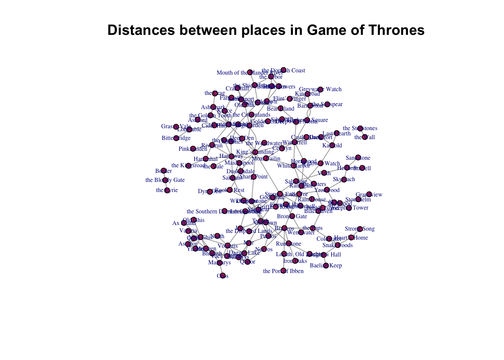

Code
library(tidyverse)
library(igraph)
library(statnet)
knitr::opts_chunk$set(echo = TRUE)Claire Battaglia
March 1, 2023
This week I’ll be creating a network of the distances between various places in Game of Thrones. The data are organized in an edgelist.
# A tibble: 10 × 6
From To Miles Mode `Region From` Notes
<chr> <chr> <dbl> <chr> <chr> <chr>
1 Casterly Rock the Golden Tooth 240 land Westerlands <NA>
2 Casterly Rock Lannisport 40 land Westerlands <NA>
3 Casterly Rock Kayce 100 land Westerlands <NA>
4 Casterly Rock Kayce 12 water Westerlands <NA>
5 Casterly Rock Deep Den 240 land Westerlands Goldroad
6 Deep Den King’s Landing 590 land Westerlands Goldroad
7 Kayce Faircastle 480 raven Westerlands <NA>
8 Faircastle the Crag 115 Boat Westerlands Island
9 the Crag Ashemark 85 land Westerlands <NA>
10 Ashemark Casterly Rock 170 land Westerlands <NA> The “from” and “to” fields are already clearly defined and it seems as though the miles and mode are edge attributes. I’m not sure what the “Region From” field is in the context of a network, though.
IGRAPH 0440fcf UN-- 134 200 --
+ attr: name (v/c), Miles (e/n), Mode (e/c), Region From (e/c), Notes
| (e/c)
+ edges from 0440fcf (vertex names):
[1] Casterly Rock--the Golden Tooth Casterly Rock--Lannisport
[3] Casterly Rock--Kayce Casterly Rock--Kayce
[5] Casterly Rock--Deep Den Deep Den --King’s Landing
[7] Kayce --Faircastle Faircastle --the Crag
[9] the Crag --Ashemark Casterly Rock--Ashemark
[11] Ashemark --the Golden Tooth Lannisport --Crakehall
[13] Crakehall --Old Oak Old Oak --Highgarden
+ ... omitted several edgesWe can see a few things from this summary:
We can get a bit more information about the nodes and edges.
[1] 134[1] 200[1] "name"[1] "Miles" "Mode" "Region From" "Notes" The “Region From” field is currently being understood as an edge attribute, which doesn’t really make sense to me so I am wondering if I need to specify it as something else.
We can also use a dyad and triad census to get a better understanding of the network.
I’m not sure what to make of the dyad census. Given that distances between places are by nature reciprocal, I don’t understand why all the dyads aren’t mutual. There is no way for Casterly Rock to be 240 miles from the Golden Tooth without the Golden Tooth also being 240 miles from Casterly Rock.
Given the number of null dyads (i.e. missing ties), it seems as though the mileage between many places hasn’t been recorded. Again, there is by definition a distance between any two physical places.
Warning in igraph::triad.census(dist.ig): At core/misc/motifs.c:1165 : Triad
census called on an undirected graph. [1] 368822 0 22731 0 0 0 0 0 0 0
[11] 501 0 0 0 0 30A triad census doesn’t work on an undirected grapgh so I’m not sure whether there is anything meaningful here.
Logically we know there is a distance between every two physical place so it seems like the dyad and triad census in this case is more useful for revealing missing distances than anything else.
If the ties in this network were roads or established routes of some kind, both censuses could reveal interesting insight into places that are more connected than others but distance is a feature of the physical world, not a human creation.
[1] 0.1522843[1] 0.1767116[1] 0.03571429 0.09523810We can see that the transitivity scores of Winterfell and Casterly Rock are .04 and .1, respectively, indicating that in the context of this network, a higher percentage of the nodes connected to Casterly Rock are also connected to each other than for Winterfell.
Again, the concept of transitivity doesn’t make a lot of sense when we’re talking about distances between physical features.
[1] "membership" "csize" "no" [1] 3[1] 129 3 2This is interesting. There are three components in the network. If the network included the distances between each of the places included—as in a map—there would be just a single component in the network. Either the network is missing a lot of information or I read it in incorrectly.
Casterly Rock
Winterfell 2 King’s Landing
Winterfell 1 Casterly Rock
King’s Landing 1Both Winterfell and Casterly Rock are equidistant from King’s Landing. We know this isn’t true in terms of the number of miles so I think this is talking about the number of nodes in between each of them and King’s Landing. This is interesting because even this measure of distance (i.e. number of nodes instead of number of miles) can have profound socio-political implications.
# remove multiple and loops
dist.ig <- simplify(dist.ig, remove.multiple = F, remove.loops = T)
# assign weight??
#E(dist.ig)$weight <- E(dist.ig)$Miles
# plot network
plot(dist.ig,
vertex.size = 5,
vertex.color = "maroon",
vertex.label.cex = .5,
main = "Distances between places in Game of Thrones")
distance() function to return the number of miles between two nodes–is this possible?---
title: "Week 2 Challenge"
author: "Claire Battaglia"
desription: "Describing the basic structure of a network"
date: "March 1, 2023"
format:
html:
toc: true
code-fold: true
code-copy: true
code-tools: true
categories:
- Claire Battaglia
- challenge2
---
```{r}
#| label: setup
#| warning: false
library(tidyverse)
library(igraph)
library(statnet)
knitr::opts_chunk$set(echo = TRUE)
```
## Describe the network data
This week I'll be creating a network of the distances between various places in Game of Thrones. The data are organized in an edgelist.
```{r data distances}
# read in data
dist <- read_csv("_data/got/got_distances.csv", show_col_types = FALSE)
# reorder columns
dist <- dist %>%
relocate(From, To, Miles, Mode, .before = "Region From")
# preview
head(dist, 10)
```
The "from" and "to" fields are already clearly defined and it seems as though the miles and mode are edge attributes. I'm not sure what the "Region From" field is in the context of a network, though.
```{r network object}
# create network object
dist.ig <- graph_from_data_frame(dist, directed = FALSE)
# view
print(dist.ig)
```
We can see a few things from this summary:
1. The network is **undirected**. This makes sense as distances between physical locations are by nature symmetrical.
1. The network is **named**. I.e. the nodes/vertices have names. In this network the nodes are physical places with names.
1. The edges are **unweighted**.
1. It is not bipartite.
1. There are 134 nodes/vertices.
1. There are 200 edges/ties.
We can get a bit more information about the nodes and edges.
```{r node/edge}
# get count
vcount(dist.ig)
ecount(dist.ig)
# get attributes
vertex_attr_names(dist.ig)
edge_attr_names(dist.ig)
```
The "Region From" field is currently being understood as an edge attribute, which doesn't really make sense to me so I am wondering if I need to specify it as something else.
## Dyad and triad census
We can also use a dyad and triad census to get a better understanding of the network.
```{r dyad}
# dyad census
igraph::dyad.census(dist.ig)
```
I'm not sure what to make of the dyad census. Given that distances between places are by nature reciprocal, I don't understand why all the dyads aren't mutual. There is no way for Casterly Rock to be 240 miles from the Golden Tooth without the Golden Tooth also being 240 miles from Casterly Rock.
Given the number of null dyads (i.e. missing ties), it seems as though the mileage between many places hasn't been recorded. Again, there is by definition a distance between any two physical places.
```{r triad}
# triad census
igraph::triad.census(dist.ig)
```
A triad census doesn't work on an undirected grapgh so I'm not sure whether there is anything meaningful here.
Logically we know there is a distance between every two physical place so it seems like the dyad and triad census in this case is more useful for revealing missing distances than anything else.
If the ties in this network were roads or established routes of some kind, both censuses could reveal interesting insight into places that are more connected than others but distance is a feature of the physical world, not a human creation.
## Global and local transitivity
```{r transitivity}
# get global trans
transitivity(dist.ig)
# get avg local trans
transitivity(dist.ig, type = "average")
# get local trans of Winterfell, Casterly Rock
transitivity(dist.ig, type = "local", vids = V(dist.ig)[c("Winterfell", "Casterly Rock")])
```
We can see that the transitivity scores of Winterfell and Casterly Rock are .04 and .1, respectively, indicating that in the context of this network, a higher percentage of the nodes connected to Casterly Rock are also connected to each other than for Winterfell.
Again, the concept of transitivity doesn't make a lot of sense when we're talking about distances between physical features.
## Path length and component structure
```{r components}
# get component names
names(igraph::components(dist.ig))
# get number of components
igraph::components(dist.ig)$no
# get size of components
igraph::components(dist.ig)$csize
```
This is interesting. There are three components in the network. If the network included the distances between each of the places included---as in a map---there would be just a single component in the network. Either the network is missing a lot of information or I read it in incorrectly.
```{r path length}
# get distance between Winterfell and Casterly Rock
distances(dist.ig,"Winterfell","Casterly Rock")
# get distance between Winterfell and King’s Landing
distances(dist.ig,"Winterfell","King’s Landing")
# get distance between Casterly Rock and King’s Landing
distances(dist.ig,"King’s Landing","Casterly Rock")
```
Both Winterfell and Casterly Rock are equidistant from King's Landing. We know this isn't true in terms of the number of miles so I think this is talking about the number of nodes in between each of them and King's Landing. This is interesting because even this measure of distance (i.e. number of nodes instead of number of miles) can have profound socio-political implications.
```{r density}
# get density
graph.density(dist.ig, loops = T)
```
```{r plot}
# remove multiple and loops
dist.ig <- simplify(dist.ig, remove.multiple = F, remove.loops = T)
# assign weight??
#E(dist.ig)$weight <- E(dist.ig)$Miles
# plot network
plot(dist.ig,
vertex.size = 5,
vertex.color = "maroon",
vertex.label.cex = .5,
main = "Distances between places in Game of Thrones")
```
## Questions
1. What to do with "Region From" field? This is potentially meaningful information but I'm not sure how to incorporate it into the network.
1. How to make the length of the tie proportional to the number of miles? I'd like the `distance()` function to return the number of miles between two nodes--is this possible?
1. How to display the number of miles?
1. How to color the edges according to the mode?